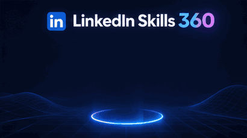

Profile & reputation
Positioning, headline, About, experience, keywords, recommendations and privacy reviews.
From profile and job search to networking, content, sales, ads, recruiting and hiring. A portable skill ecosystem for students, professionals, creators, businesses and talent teams.
Small, specialized workflows beat one oversized prompt. Select the task, bring your context, and let the right specialist produce a reviewable output.
A user goal is routed to a focused skill and specialist role. Research, privacy and quality review are added only when the task needs them. Real-world actions stay with the human.

A broad catalogue that supports people looking for opportunities and teams looking for talent or customers.
Positioning, headline, About, experience, keywords, recommendations and privacy reviews.
Job discovery, applications, internships, career transitions, offers and development plans.
Referrals, alumni, informational interviews, relationship building and respectful follow-ups.
Posts, newsletters, events, creator strategy, groups, company pages and executive voice.
Sales Navigator research, account intelligence, campaign planning, lead forms and measurement.
Sourcing, pipeline design, candidate experience, structured interviews and onboarding handoffs.
Build a credible profile, show real projects, discover internships and prepare for campus or early-career interviews.
Explore student workflows →Search smarter, tailor truthful materials, network with intent, prepare for interviews and manage career moves.
Explore career workflows →Build role intake, sourcing plans, structured interviews, candidate communications and fair review processes.
Explore hiring workflows →Portable role prompts that can be delegated by capable hosts—or followed sequentially by a single model.
Understands the goal, selects the minimum useful skills and defines handoffs.
Profile, career, content, sales, recruiting, interviews, research and more.
Validate evidence, surface uncertainty and keep decisions human-owned.
This is an instruction architecture, not a bundled orchestration runtime. Host delegation and tool access vary.
No required API key, proprietary framework or provider-specific SDK. Start with one Markdown workflow and your own context.
Explore the workflows, adapt them to your model, and help improve the library for the next person.